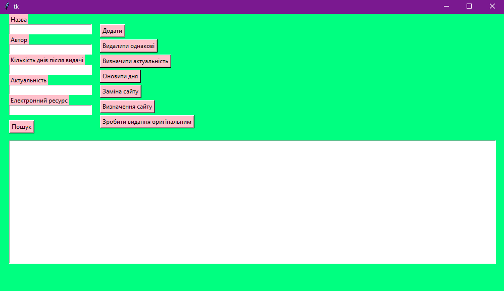

Програмний код
Умова:
Створити абстрактний клас Видання й похідні класи: Стаття та Електронний ресурс.
Bивести повну інформацію з каталогу, а також організувати пошук видань за прізвищем автора.
Побудувати ієрархію класів відповідно до варіанта завдання.
У кожному класі задати поля, які характерні для даних класів.
Абстрактний клас повинен містити чотири методи, два з яких повинні бути абстрактними, а реалізацію абстрактних методів повинні містити його похідні класи.
Кожен похідний клас містить два своїх власних методи.
Класи
Абстрактний клас:
class Edition(ABC):
def __init__(self, name="ІФТКН", surname="Штірліц"):
self.name = name
self.surname = surname
def delete(self, s):
for i in range(len(s)):
for j in range(len(s)):
if s[i] == s[j] and i != j:
s[j] = ""
return s
def renewal(self):
return self.name + ":Original"
@abstractmethod
def search(self, s, b):
k = []
for i in range(len(b) - 2):
if s + "|" == b[i][3]:
k.append(b[i])
return k
@abstractmethod
def show(self):
return "" + self.name + "" + self.surname
def __del__(self):
print()Дочірні класи:
1:
class Article(Edition):
def __init__(self, name="ІФТКН", surname="Штірліц", day="1", ind="Актуальне"):
if len(name) == 0:
self.name = "ІФТКН"
else:
self.name = name
if len(surname) == 0:
self.surname = "Штірліц"
else:
self.surname = surname
if len(day) == 0:
self.day = "1"
else:
self.day = day
if len(ind) == 0:
self.ind = "Актуальне"
else:
self.ind = ind
def show_ind(self):
if int(self.day) > 7:
self.ind = "Неактуальне"
else:
self.ind = "Aктуальне"
return self.ind
def new_day(self):
return str(int(self.day) + 1)
def search(self, s, b):
k = []
for i in range(len(b) - 2):
if s + "|" == b[i][3]:
k.append(b[i])
return k
def show(self):
return "Назва: " + self.name + "| Автор: " + self.surname + "| Днів після випуску: " + self.day + "| Актуальність: " + self.ind
def __del__(self):
print()class Link(Article):
def __init__(self, name="ІФТКН ", surname=" Штірліц", link="wiki.ua"):
if len(link) == 0:
self.link = "wiki.ua"
else:
self.link = link
super().__init__(name, surname)
def show_cntr_link(self):
if self.link[len(self.link) - 2] == "u" and self.link[len(self.link) - 1] == "a":
return self.link + ": український ресурс"
else:
return self.link
def zmina(self):
k = randint(0, 5)
if k == 0:
self.link = "znannja.ua"
elif k == 1:
self.link = "osvita.com"
elif k == 2:
self.link = "bdsn.ua"
elif k == 3:
self.link = "abx.org"
elif k == 4:
self.link = "newhub.com"
elif k == 5:
self.link = "bombom.com"
return self.link
def search(self, s, b):
k = []
for i in range(len(b) - 2):
if s + "|" == b[i][3]:
k.append(b[i])
return k
def show(self):
return "| Електорнний ресурс: " + self.link + "\n"
def __del__(self):
print()Функції для роботи кнопок:
Додавання в каталог:
def obr():
s = v.get('0.0', END).split("\n")
s1 = v1.get('0.0', END).split("\n")
s2 = v2.get('0.0', END).split("\n")
s3 = v3.get('0.0', END).split("\n")
s4 = v4.get('0.0', END).split("\n")
h = Article(s[0], s1[0], s2[0], s3[0])
l = Link(s[0], s1[0], s4[0])
table.insert(END, h.show() + l.show())Видалення одинакових:
def deleted():
s = table.get('0.0', END).split("\n")
k = Article()
table.delete('0.0', END)
v = k.delete(s)
for i in range(len(v)):
if v[i] != "":
table.insert(END, v[i] + "\n")Визначення актуальності:
def actuality():
g = table.get('0.0', END).split("\n")
s = v.get('0.0', END).split("\n")
s1 = v1.get('0.0', END).split("\n")
s2 = v2.get('0.0', END).split("\n")
s3 = v3.get('0.0', END).split("\n")
s4 = v4.get('0.0', END).split("\n")
h = Article(s[0], s1[0], s2[0], s3[0])
l = Link(s[0], s1[0], s4[0])
v3.delete('0.0', END)
v3.insert(END, h.show_ind())
u = h.show_ind()
m = Article(s[0], s1[0], s2[0], u)
g[len(g) - 1] = m.show() + l.show()
table.delete('0.0', END)
for i in range(len(g) - 3):
if g[i] != "":
table.insert(END, g[i] + "\n")
table.insert(END, g[len(g) - 1])
Оновлення дня:
def newday():
g = table.get('0.0', END).split("\n")
s = v.get('0.0', END).split("\n")
s1 = v1.get('0.0', END).split("\n")
s2 = v2.get('0.0', END).split("\n")
s3 = v3.get('0.0', END).split("\n")
s4 = v4.get('0.0', END).split("\n")
h = Article(s[0], s1[0], s2[0], s3[0])
l = Link(s[0], s1[0], s4[0])
v2.delete('0.0', END)
v2.insert(END, h.new_day())
u = h.new_day()
m = Article(s[0], s1[0], u, s3[0])
g[len(g) - 1] = m.show() + l.show()
table.delete('0.0', END)
for i in range(len(g) - 3):
if g[i] != "":
table.insert(END, g[i] + "\n")
table.insert(END, g[len(g) - 1])Заміна сайту:
def newlink():
g = table.get('0.0', END).split("\n")
s = v.get('0.0', END).split("\n")
s1 = v1.get('0.0', END).split("\n")
s2 = v2.get('0.0', END).split("\n")
s3 = v3.get('0.0', END).split("\n")
s4 = v4.get('0.0', END).split("\n")
h = Article(s[0], s1[0], s2[0], s3[0])
l = Link(s[0], s1[0], s4[0])
v4.delete('0.0', END)
v4.insert(END, l.zmina())
u = v4.get('0.0', END).split("\n")
w = Link(s[0], s1[0], u[0])
g[len(g) - 1] = h.show() + w.show()
table.delete('0.0', END)
for i in range(len(g) - 3):
if g[i] != "":
table.insert(END, g[i] + "\n")
table.insert(END, g[len(g) - 1])Визначення сайту:
def cousite():
g = table.get('0.0', END).split("\n")
s = v.get('0.0', END).split("\n")
s1 = v1.get('0.0', END).split("\n")
s2 = v2.get('0.0', END).split("\n")
s3 = v3.get('0.0', END).split("\n")
s4 = v4.get('0.0', END).split("\n")
h = Article(s[0], s1[0], s2[0], s3[0])
l = Link(s[0], s1[0], s4[0])
v4.delete('0.0', END)
v4.insert(END, l.show_cntr_link())
u = l.show_cntr_link()
w = Link(s[0], s1[0], u)
g[len(g) - 1] = h.show() + w.show()
table.delete('0.0', END)
for i in range(len(g) - 3):
if g[i] != "":
table.insert(END, g[i] + "\n")
table.insert(END, g[len(g) - 1])Робіння видання оригінальним:
def original_name():
g = table.get('0.0', END).split("\n")
s = v.get('0.0', END).split("\n")
s1 = v1.get('0.0', END).split("\n")
s2 = v2.get('0.0', END).split("\n")
s3 = v3.get('0.0', END).split("\n")
s4 = v4.get('0.0', END).split("\n")
h = Article(s[0], s1[0], s2[0], s3[0])
l = Link(s[0], s1[0], s4[0])
v.delete('0.0', END)
v.insert(END, h.renewal())
u = h.renewal()
m = Article(u, s1[0], s2[0], s3[0])
g[len(g) - 1] = m.show() + l.show()
table.delete('0.0', END)
for i in range(len(g) - 3):
if g[i] != "":
table.insert(END, g[i] + "\n")
table.insert(END, g[len(g) - 1])Пошук:
def search():
n = []
c = str
v5.delete('0.0', END)
g = table.get('0.0', END).split("\n")
for i in range(len(g)):
k = []
s = g[i].split(" ")
for j in range(len(s)):
k.append(s[j])
n.append(k)
print(len(n))
print(n[0][3])
s = v.get('0.0', END).split("\n")
s1 = v1.get('0.0', END).split("\n")
s2 = v2.get('0.0', END).split("\n")
s3 = v3.get('0.0', END).split("\n")
s4 = v4.get('0.0', END).split("\n")
h = Article(s[0], s1[0], s2[0], s3[0])
u = h.search(s1[0], n)
for i in range(len(u)):
v5.insert(END, u[i])
v5.insert(END, "\n")
v5.insert(END, "\n")
c = v5.get('0.0', END)
messagebox.showinfo("Error", c)GUI:

okn = Tk()
okn.config(background='#00FF80')
okn.geometry('1000x550')
l = Label(okn, text='Назва', bg='pink')
l.place(x=20, y=0)
v = Text(okn, width=20, height=1)
v.place(x=20, y=20)
l1 = Label(okn, text='Автор', bg='pink')
l1.place(x=20, y=40)
v1 = Text(okn, width=20, height=1)
v1.place(x=20, y=60)
l2 = Label(okn, text='Кількість днів після видачі', bg='pink')
l2.place(x=20, y=80)
v2 = Text(okn, width=20, height=1)
v2.place(x=20, y=100)
l3 = Label(okn, text='Актуальність', bg='pink')
l3.place(x=20, y=120)
v3 = Text(okn, width=20, height=1)
v3.place(x=20, y=140)
l4 = Label(okn, text='Електронний ресурс', bg='pink')
l4.place(x=20, y=160)
v4 = Text(okn, width=20, height=1)
v4.place(x=20, y=180)
v5 = Text(okn, width=1, height=1)
v5.place(x=20000, y=400)
t = Button(okn, text='Додати', bg='pink', command=obr)
t.place(x=200, y=20)
t1 = Button(okn, text='Видалити однакові', bg='pink', command=deleted)
t1.place(x=200, y=50)
t2 = Button(okn, text='Визначити актуальність', bg='pink', command=actuality)
t2.place(x=200, y=80)
t3 = Button(okn, text='Оновити дня', bg='pink', command=newday)
t3.place(x=200, y=110)
t4 = Button(okn, text='Заміна сайту', bg='pink', command=newlink)
t4.place(x=200, y=140)
t5 = Button(okn, text='Визначення сайту', bg='pink', command=cousite)
t5.place(x=200, y=170)
t6 = Button(okn, text='Зробити видання оригінальним', bg='pink', command=original_name)
t6.place(x=200, y=200)
t7 = Button(okn, text='Пошук', bg='pink', command=search)
t7.place(x=20, y=210)
table = Text(okn, width=120, height=15)
table.place(x=20, y=250)
okn.mainloop()Підключені бібліотекі:
from abc import ABC
from abc import abstractmethod
from tkinter import *
from random import randint
from tkinter import messagebox